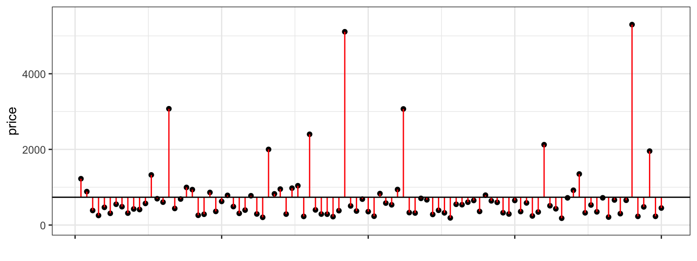
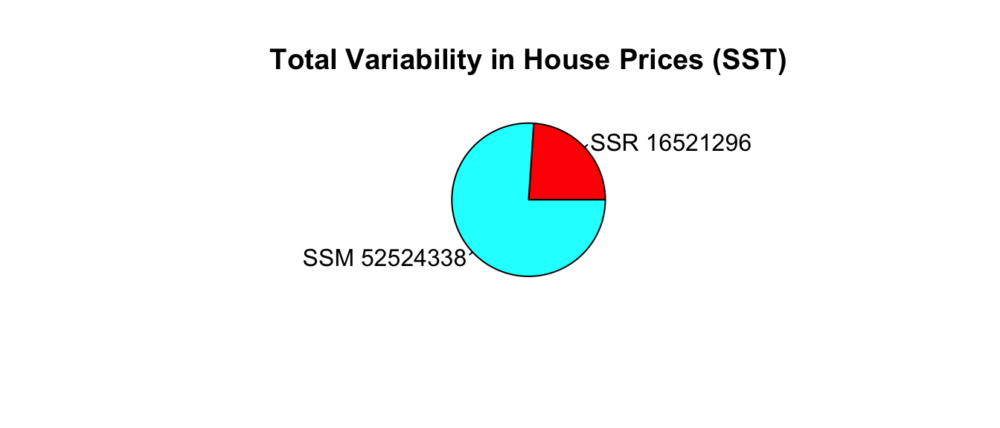

Chapter 2 Introduction to Statistical Models
Learning Outcomes:
- Calculate sums of squares related to variability explained, including SST, SSR, and SSM., when given small datasets and/or summary statistics.
- Explain the meaning of SST, SSR, and SSM in a given context.
- Calculate \(R^2\) and ANOVA F-Statistics, when given small datasets and/or summary statistics.
- Interpret \(R^2\) and F-statistics in context.
- Explain the process for estimating least-squares regression coefficients.
- Calculate predictions from linear regression models.
- Interpret regression coefficients for models involving quantitative and/or categorical variables in context, or explain why it is inappropriate to do so.
- Explain the meaning of interaction between quantitative and categorical explanatory variables.
- Apply graphical methods, statistical summaries, and background knowledge to argue for whether or not interaction term(s) should be used in a statistical model.
- Determine slopes, intercepts, and other regression coefficients for specific categories or values of an explanatory variable in models that involve interaction.
2.1 Fitting Models to Data
2.1.1 Terminology
In this section, we’ll use statistical models to predict the prices of houses in King County, WA.
In a statistical model,
The variable we are trying to predict (price) is called the response variable (denoted \(Y\)).
Variable(s) we use to help us make the prediction is(are) called explanatory variables (denoted \(X\)). These are also referred to as predictor variables or covariates.
2.1.2 Model with Quantitative Explanatory Variable
We’ll first predict the price of the house, using the number of square feet of living space as our explanatory variable.
We’ll assume that price changes linearly with square feet, and fit a trend line to the data.
ggplot(data=Houses, aes(x=sqft_living, y=price)) +
geom_point() +
stat_smooth(method="lm", se=FALSE) +
ggtitle("Price and Living Space") +
ylab("Price") +
xlab("Living Space in sq. ft. ")
The model equation is
\[ \widehat{\text{Price}} = b_0 + b_1\text{Sq.Ft.} \]
Note, the symbol over the response variable (Price) is read as “hat”, and means “predicted price”.
We fit the model in R, using the lm (linear model) command. The output gives the estimates of \(b_0\) and \(b_1\).
M_House_sqft <- lm(data=Houses, price~sqft_living)
M_House_sqft##
## Call:
## lm(formula = price ~ sqft_living, data = Houses)
##
## Coefficients:
## (Intercept) sqft_living
## -484.9575 0.5328The estimates are \(b_0=-484.9575\) and \(b_1=0.5328\).
The model equation is
\[ \widehat{\text{Price}} = -484.9575 + 0.5328\times\text{Sq.Ft.} \]
Interpretations
The intercept \(b_0\) represents the expected (or average) value of the response variable, when the explanatory variable is equal to 0. This is not always a meaningful interpretation in context.
The slope \(b_1\) represents the expected (or average) change in the response variable for each one-unit increase in the explanatory variable.
On average, a house with 0 square feet is expected to cost -485 thousand dollars. This is not a sensible interpretation, as there are no houses with 0 square feet.
For each additional square foot in living space, the price of the house is expected to increase by 0.5328 thousand dollars (or $533).
- Since a 1 square ft. increase is very small, it makes more sense to give the interpretation in terms of a 100-square foot increase. For each additional 100 square feet in living space, the price of the house is expected to increase by 53.28 thousand dollars.
Prediction
We can predict the price of a house with a given number of square feet by plugging the square feet into the model equation.
The predicted price of a house with 1,500 square feet is
\[ \widehat{\text{Price}} = -484.9575 + 0.5328\times 1500 = \$314{ \text{ thousand}} \]
We can calculate this directly in R using the predict command.
predict(M_House_sqft, newdata=data.frame(sqft_living=1500))## 1
## 314.1803We should only try to make predictions on houses within the range of the observed data. Since the largest house in the dataset is 8,000 square feet we should not try to predict the price of house with 10,000 square feet.
2.1.3 Model with Categorical Variable
Next, we’ll predict the price of a house based on whether or not it is on the waterfront.
The boxplot shows the distribution of prices for waterfront and nonwaterfront houses. The red dots indicate the mean.
ggplot(data=Houses, aes(x=waterfront, y=price)) + geom_boxplot() +
ggtitle("House Price by Waterfront Status") +
xlab("Waterfront") + ylab("Price") + coord_flip() +
stat_summary(fun.y=mean, geom="point", shape=20, color="red", fill="red")
The table displays the price summary by waterfront status.
Houses_Grouped_Summary <- Houses %>% group_by(waterfront) %>%
summarize(Mean_Price = mean(price, na.rm=TRUE),
Median_Price = median(price, na.rm=TRUE),
StDev_Price = sd(price, na.rm = TRUE),
Number_of_Houses = n())
kable(Houses_Grouped_Summary)| waterfront | Mean_Price | Median_Price | StDev_Price | Number_of_Houses |
|---|---|---|---|---|
| No | 523.7595 | 450 | 295.7991 | 85 |
| Yes | 1934.3800 | 1350 | 1610.7959 | 15 |
The model equation is
\[ \widehat{\text{Price}} = b_0 + b_1\text{Waterfront} \]
The waterfront variable takes on value of 1 if the house is on the waterfront, and 0 otherwise.
M_House_wf <- lm(data=Houses, price~waterfront)
M_House_wf##
## Call:
## lm(formula = price ~ waterfront, data = Houses)
##
## Coefficients:
## (Intercept) waterfrontYes
## 523.8 1410.6The estimates are \(b_0=523.8\) and \(b_1=1410.6\).
The model equation is
\[ \widehat{\text{Price}} = 523.8 + 1410.6\times \text{Sq.Ft.} \]
Interpretations
The intercept \(_0\) represents the expected (or average) value of the response variable in the “baseline” category (in this case non-waterfront).
The coefficient \(b_1\) represents the expected (or average) difference in response between the a category and the “baseline” category.
On average, a house that is not on the waterfront is expected to cost 523.8 thousand dollars.
On average a house that is not on the waterfront is expected to cost 1410.6 thousand (or 1.4 million) dollars more than a house that is not on the waterfront.
Prediction
We can predict the price of a house with a given number of square feet by plugging in either 1 or 0 for the waterfront variable.
The predicted price of a house on the waterfront is:
\[ \widehat{\text{Price}} = 523.8 + 1410.6\times 1 = \$1934.6{ \text{ thousand (or 1.9 million)}} \]
The predicted price of a house not on the waterfront is:
\[ \widehat{\text{Price}} = 523.8 + 1410.6\times 0 = \$523.8{ \text{ thousand}} \]
Calculations in R:
predict(M_House_wf, newdata=data.frame(waterfront="Yes"))## 1
## 1934.38predict(M_House_wf, newdata=data.frame(waterfront="No"))## 1
## 523.7595Notice that the predicted prices for each category correspond to the average price for that category.
2.1.4 Model with Multiple Explanatory Variables
We’ve used square feet and waterfront status as explanatory variables individually. We can also build a model that uses both of these variables at the same time.
A model with two or more explanatory variables is called a multiple regression model.
The model equation is
\[ \widehat{\text{Price}} = b_0 + b_1\times\text{Sq. Ft} + b_2\times\text{Waterfront} \]
For a house not on the waterfront, \(b_2=0\), so the model equation is:
\[ \widehat{\text{Price}} = b_0 + b_1\text{Sq. Ft} \]
For a house on the waterfront, \(b_2=1\), so the model equation is:
\[ \widehat{\text{Price}} = (b_0 + b_2) + b_1\times\text{Sq. Ft} \]
Notice that the slope is the same, regardless of whether the house is on the waterfront (\(b_1\)). The intercept, however, is different (\(b_0\) for houses not on the waterfront, and \(b_0 + b_2\) for houses on the waterfront). Thus, the model assumes that price increases at the same rate, with respect to square feet, regardless of whether or not it is on the waterfront, but allows the predicted price for a waterfront house to differ from a non-waterfront house of the same size.

We fit the model in R.
M_wf_sqft <- lm(data=Houses, price~sqft_living+waterfront)
M_wf_sqft##
## Call:
## lm(formula = price ~ sqft_living + waterfront, data = Houses)
##
## Coefficients:
## (Intercept) sqft_living waterfrontYes
## -407.6549 0.4457 814.3613The model equation is
\[ \widehat{\text{Price}} = -407.7 + 0.4457\times\text{Sq. Ft} + 814.36\times\text{Waterfront} \]
Interpretations
The intercept \(b_0\) represents the expected (or average) value of the response variable, when all quantitative explanatory variables are equal to 0, and all categorical variables are in the “baseline” category. This interpretion is not always sensible.
We interpret coefficients \(b_j\) for categorical or quantitative variables, the same way we would in a regression model with only one variable, but we need to state that all other explanatory variables are being held constant.
On average, a house that is not on the waterfront with 0 square feet is expected to cost -407.7 thousand dollars. This is not a sensible interpretation, since there are no houses with 0 square feet.
For each 1-square foot increase in size, the price of a house is expected to increase by 0.4457 thousand (or 446 hundred) dollars, assuming waterfront status is the same. Equivalently, for each 100-square foot increase in size, the price of a house is expected to increase by 44.57 thousand dollars, assuming waterfront status is the same.
On average, a house on the waterfront is expected to cost 814 thousand dollars more than a house that is not on the waterfront, assuming square footage is the same.
Prediction
The predicted price of a 1,500 square foot house on the waterfront is:
\[ \widehat{\text{Price}} = -407.7 + 0.4457\times1500 + 814.36\times1 = \$1075{ \text{ thousand (or 1.075 million)}} \]
The predicted price of a 1,500 square foot not on the waterfront is:
\[ \widehat{\text{Price}} = -407.7 + 0.4457\times1500 = \$260.9{ \text{ thousand}} \]
Calculations in R:
predict(M_wf_sqft, newdata=data.frame(waterfront="Yes", sqft_living=1500))## 1
## 1075.227predict(M_wf_sqft, newdata=data.frame(waterfront="No", sqft_living=1500))## 1
## 260.86572.1.5 Model with No Explanatory Variable
Finally, we’ll consider a model that makes use of no explanatory variables at all. Although this might seem silly, its relevance will be seen in the next section.
The histogram shows the distribution of prices, without any information about explanatory variables. The mean price is indicated in red.
ggplot(data=Houses, aes(x=price)) +
geom_histogram(fill="lightblue", color="white") +
ggtitle("Distribution of House Prices") + xlab("Price") + ylab("Frequency") +
geom_point(aes(x=mean(Houses$price), y=0), color="red", shape=24, fill="red")The mean, median, and standard deviation in prices is shown below.
library(knitr)
kable(Houses_Summary)| Mean_Price | Median_Price | StDev_Price | Number_of_Houses |
|---|---|---|---|
| 735.3525 | 507.5 | 835.1231 | 100 |
Suppose we know that a house sold in King County during this time, and want to predict the price, without knowing anything else about the house.
The best we can do is to use the mean price for our prediction. (We’ll define what we mean by “best” later in the chapter.)
The model equation is
\[ \widehat{\text{Price}} = b_0 \]
We fit a statistical model in R using the lm command.
# syntax for lm command
# lm(data=DatasetName, ResponseVariable~ExplanatoryVariable(s))
M0_House <- lm(data=Houses, price ~ 1) # when there are no explanatory variables, use ~1
M0_House##
## Call:
## lm(formula = price ~ 1, data = Houses)
##
## Coefficients:
## (Intercept)
## 735.4The model equation is
\[ \widehat{\text{Price}} = 735.4 \]
Interpretation
The expected price of a house in King County is 735.4 thousand dollars.
Predictions
Without knowing anything about any explanatory variables, we would predict the price of any house sold in King County, WA to cost 735.4 thousand dollars.
2.2 Variability Explained by a Model
2.2.1 Quantifying Variability
We’ve seen four different models for predicting house price. It would be nice to have a way to assess how well the models are predicting prices, and determine which model appears to be the best.
Of course we won’t know the price of the house we are trying to predict, so we can’t be sure how close or far our prediction is. We do, however, know the prices of the original 100 houses in our dataset. We can assess the models by measuring how far the actual prices of the 100 houses differ from the predicted (mean) price, and by calculating the proportion of total variation in sale price explained by each model.
2.2.2 Total Variability
Let’s start with our most basic model, which uses no explanatory variables and predicts the price of each simply using the average of all houses in the dataset.
We measure the total variability in the response variable by calculating the square difference between each individual response value and the overall average. This quantity is called the total sum of squares (SST).
\[ \text{SST} = \displaystyle\sum_{i=1}^n (y_i - \bar{y})^2 \]
The plot below shows a horizontal line at the mean sale price (785 thousand). The points represent prices of individual houses, and the red lines represent the differences between the price of each house and the overall average.

The first three houses in the dataset are shown below.
First3Houses <- Houses %>% select(Id, price, waterfront, sqft_living) %>% head(3)
kable(First3Houses)| Id | price | waterfront | sqft_living |
|---|---|---|---|
| 1 | 1225 | No | 5420 |
| 2 | 885 | No | 2830 |
| 3 | 385 | No | 1620 |
\[ \begin{aligned} \text{SST} & = \displaystyle\sum_{i=1}^{100} (y_i - \bar{y})^2 \\ & = (1225-785)^2 + (885-785)^2 + (385-785)^2 + \ldots \end{aligned} \]
We could calculate SST by hand for small datasets. For larger datasets, we’ll use R to perform the calculation.
meanprice <- mean(Houses$price) #calculate mean price
SST <- sum((Houses$price - meanprice)^2) ## calculate SST
SST## [1] 69045634By itself, the size of SST does not have much meaning. We cannot say whether a SST value like the one we see here is large or small, since it depends on the size and scale of the variable being measured. An SST value that is very large in one context might be very small in another.
SST does, however, give us a baseline measure of the total variability in the response variable. We’ll assess the performance of a model with a given explanatory variable by measuring how much of this variability the model accounts for.
2.2.3 Residuals
Now let’s consider our model that uses the size of the house in square feet as the explanatory variable. The figure on the left shows difference between actual and predicted prices, using this linear model. We compare the size of the differences to those resulting from the basic model that does not use any explanatory variables, and predicts each price using the overall average (shown on the right).
Residplot_sqft <- ggplot(data=Houses, aes(x = sqft_living, y = price)) + geom_point() +
geom_segment(aes(xend = sqft_living, yend = M_House_sqft$fitted.values), color="red") +
geom_point(aes(y = M_House_sqft$fitted.values), shape = 1) +
stat_smooth(method="lm", se=FALSE) + ylim(c(0,5500)) +
theme_bw() Notice that the red lines are shorter in the figure on the left, indicating the predictions are closer to the actual values.
The difference between the actual and predicted values is called the residual. The residual for the \(ith\) case is
\[ r_i = (y_i-\hat{y}_i)^2 \]
We’ll calculate the residuals for the first three houses in the dataset, shown below.
kable(First3Houses)| Id | price | waterfront | sqft_living |
|---|---|---|---|
| 1 | 1225 | No | 5420 |
| 2 | 885 | No | 2830 |
| 3 | 385 | No | 1620 |
The model equation is
\[ \widehat{\text{Price}} = -484.9575 + 0.5328\times \text{Sq. Ft} \]
The predicted prices for these three houses are:
\[ \widehat{\text{Price}_1} = -484.9575 + 0.5328\times 5420 = 2402.6 \text{ thousand dollars} \]
\[ \widehat{\text{Price}_2} = -484.9575 + 0.5328\times 2830 = 1022.7 \text{ thousand dollars} \]
\[ \widehat{\text{Price}_3} = -484.9575 + 0.5328\times 1620 = 378.1 \text{ thousand dollars} \]
To calculate the residuals, we subtract the predicted price from the actual price.
\[r_1 = y_1-\hat{y}_1 = 1225 - 2402.6 = -1177.6 \text{ thousand dollars}\]
\[r_2 = y_2-\hat{y}_2 = 885 - 1022.7 = -137.7 \text{ thousand dollars}\]
\[r_2 = y_2-\hat{y}_2 = 385 - 378.1 = 6.9 \text{ thousand dollars}\]
The fact that the first two residuals are negative indicates that these houses sold for less than the model predicts.
The predicted values and residuals from a model can be calculated automatically in R. The predicted values and residuals for the first 5 houses are shown below.
Predicted <- predict(M_House_sqft)
head(Predicted, 3)## 1 2 3
## 2402.5937 1022.7491 378.1113Residual <- M_House_sqft$residuals
head(Residual, 3)## 1 2 3
## -1177.593665 -137.749128 6.8886682.2.4 Variability Explained by Sq. Ft. Model
The sum of squared residuals (SSR) measures the amount of unexplained variability in the response variable after accounting for all explanatory variables in the model.
\[ \text{SSR} = \displaystyle\sum_{i=1}^{n}(y_i-\hat{y}_i)^2. \]
Note that SSR is similar to SST, except we subtract the model’s predicted values, rather than the overall average. In the special case of a model with no explanatory variables, the predicted values are equal to the overall average, so SSR is equal to SST.
We calculate SSR for the model using square feet as the explanatory variable.
\[ \begin{aligned} \text{SSR} & = \displaystyle\sum_{i=1}^{n}(y_i-\hat{y}_i)^2. \\ & = (1225 - 2402.6)^2 + (885 - 1022.7)^2 + (385 - 378.1)^2 + \ldots \end{aligned} \]
We can calculate the model’s SSR directly in R.
SSR_sqft <- sum(M_House_sqft$residuals^2)
SSR_sqft## [1] 23767280SSR represents the amount of total variability in saleprice remaining after accounting for the house’s size in square feet.
The SSR=23,767,290 value is about one third of the SST value of 69,045,634. This means that about 2/3 of the total variability in sale price is explained by the model that accounts for sale price.
The difference (SST-SSR) represents the variability in the response variable that is explained by the model. This quantity is called the model sum of squares (SSM).
\[ \text{SSM} = \text{SST} - \text{SSR} \]
It can be shown that \(\text{SSM}=\displaystyle\sum_{i=1}^n(\hat{y}_i-\bar{y})^2\).
The proportion of total variability in the response variable explained by the model is called the coefficient of determination, denoted \(R^2\). We calculate this by dividing SSM by SST.
\[ R^2=\frac{SSM}{SST}= \frac{SST-SSR}{SST} \]
Example: For the model with square feet as the explanatory variable,
\[ SSM = SST-SSR = 69,045,634 - 23,767,290 =45,278,344. \]
\[ R^2 = \frac{45,278,344}{69,045,634}=0.6557. \]
Approximately 65.6% of the total variability in sale price is explained by the model using square feet as the explanatory variable.
We calculate \(R^2\) directly in R.
summary(M_House_sqft)$r.squared## [1] 0.65577432.2.5 Linear Correlation Coefficient
For models with a single quantiative explanatory varible, the coefficient of determination is equal to the square of the correlation coefficient \(r\), discussed in Chapter 1.
ggplot(data=Houses, aes(x=sqft_living, y=price)) + geom_point() +
stat_smooth(method="lm", se=FALSE)For linear models with a single quantitative variable, the linear correlation coefficient \(r=\sqrt{R^2}\), or \(r=-\sqrt{R^2}\) (with sign matching the sign on the slope of the line), provides information about the strength and direction of the linear relationship between the variables.
\(-1 \leq r \leq 1\), and \(r\) close to \(\pm1\) provides evidence of strong linear relationship, while \(r\) close to 0 suggests linear relationship is weak.
cor(Houses$price,Houses$sqft_living)## [1] 0.8097989- \(r\) is only relevant for models with a single quantitative explanatory variable and a quantitative response variable, while \(R^2\) is relevant for any linear model with a quantitative response variable.
2.2.6 Variability Explained by Waterfront Model
We can similarly calculate the proportion of variability explained by the model using waterfront as an explanatory variable.
Recall that in this model, the predicted price of a house with a waterfront is given by the average price of all waterfront houses, and the predicted price of a non-waterfront house is given by the average price of all non-waterfront houses.
We can calculate residuals using these predicted values, and compare them to the residuals resulting from a model with no explanatory variables, which uses the overall average price for all predictions.
The left two figures show the residuals resulting from a model that accounts for waterfront status. The figure on the right shows the residuals resulting from the model with no explanatory variables.
grid.arrange(arrangeGrob(M1aResid,M1bResid, Residplot_M0 + ggtitle("Model with no Exp. Vars"), ncol=3, nrow=1, widths=c(3, 2,5))) Notice that after accounting for waterfront status, the differences between observed and predicted values are bigger than they were in the model that accounted for square feet, though not as big as for the model that doesn’t use any explanatory variables.
We use R to calculate SSR for the waterfront model.
SSR_wf <- sum(M_House_wf$residuals^2)
SSR_wf## [1] 43675043\[ SSM = SST-SSR = 69,045,634 - 43,675,043 =25,370,591. \]
\[ R^2 = \frac{25,370,591}{69,045,634}=0.3674. \]
Approximately 36.7% of the total variability in sale price is explained by the model using waterfront status as the explanatory variable.
We calculate \(R^2\) directly in R.
summary(M_House_wf)$r.squared## [1] 0.36744672.2.7 Variability Explained by Multiple Regression Model
We’ve seen at the model using square feet accounts for about 2/3 of the total variability in house prices, while the model using waterfront status accounts for about 1/3 of the total variability. Let’s see if we can do better by using both variables together.
The left figure shows the residuals resulting from a model that accounts for both waterfront status and square feet. The figure on the right shows the residuals resulting from the model with no explanatory variables.
grid.arrange(Residplot_MR + ggtitle("Multiple Regression Model") , Residplot_M0 + ggtitle("Model with no Exp. Vars"), ncol=2)We use R to calculate SSR for the waterfront model.
SSR_wf_sqft <- sum(M_wf_sqft$residuals^2)
SSR_wf_sqft## [1] 16521296\[ SSM = SST-SSR = 69,045,634 - 16,521,296 =52,524,338. \]
\[ R^2 = \frac{52,524,338}{69,045,634}=0.761. \]
Approximately 76.1% of the total variability in sale price is explained by the model using square feet and waterfront status as the explanatory variables.

We calculate \(R^2\) directly in R.
summary(M_wf_sqft)$r.squared## [1] 0.7607192Including both square feet and waterfront status allows us to explain more variability in sale price than models that include one but not both of these variables.
2.2.8 Summary: SST, SSR, SSM, \(R^2\)
- the total variability in the response variable is the sum of the squared differences between the observed values and the overall average.
\[\text{Total Variability in Response Var.}= \text{SST} =\displaystyle\sum_{i=1}^n(y_i-\bar{y})^2\]
- the variability remaining unexplained even after accounting for explanatory variable(s) in a model is given by the sum of squared residuals. We abbreviate this SSR, for sum of squared residuals.
\[ \text{SSR} = \text{Variability Remaining}=\displaystyle\sum_{i=1}^n(y_i-\hat{y}_i)^2 \]
- the variability explained by the model, abbreviated SSM, is given by
\[ \text{SSM} = \text{SST} - \text{SSR} \]
- The coefficient of determination (abbreviated \(R^2\)) is defined as
\[R^2=\frac{\text{Variability Explained by Model}}{\text{Total Variability}}=\frac{\text{SSM}}{\text{SST}} =\frac{\displaystyle\sum_{i=1}^n(\hat{y}_i-\bar{y})^2}{\displaystyle\sum_{i=1}^n(y_i-\bar{y})^2}\]
Note that some texts use different abbreviations than the ones used here. When working with resources outside this class, be sure to carefully check the notation being used.
2.2.9 \(R^2\) Visually
Model with a single quantitative explanatory variable:

Model with a single categorical explanatory variable with 3 categories:

Blue Area = Total Variability (SST)
Red Area = Variability Remaining Unexplained by Model (SSR)
Blue Area - Red Area = Variability Explained by Model (SSM)
\(R^2 = \frac{\text{Area of Blue Squares} - \text{Area of Red Squares}}{\text{Area of Blue Squares}} = \frac{\text{SST}-\text{SSR}}{\text{SST}}= \frac{\text{SSM}}{\text{SST}}\)
2.2.10 Model Comparison Summary
| Model | Variables | Unexplained Variability | Variability Explained | \(R^2\) |
|---|---|---|---|---|
| 0 | None | 69045634.1341747 | 0 | 0 |
| 1 | Sq. Ft. | 23767280.3817707 | 45278353.752404 | 0.6557743 |
| 2 | Waterfront | 43675043.0897012 | 25370591.0444736 | 0.3674467 |
| 3 | Sq. Ft. and Waterfront | 16521296.4889025 | 52524337.6452723 | 0.7607192 |
Comments on \(R^2\):
\(R^2\) will never decrease when a new variable is added to a model.
This does not mean that adding more variables to a model always improves its ability to make predictions on new data.
\(R^2\) measures how well a model fits the data on which it was built.
It is possible for a model with high \(R^2\) to “overfit” the data it was built from, and thus perform poorly on new data. We will discuss this idea extensively later in the course.
On some datasets, there is a lot of “natural” variability in the response variable, and no model will achieve a high \(R^2\). That’s okay. Even a model with \(R^2 = 0.10\) or less can provide useful information.
The goal is not to achieve a model that makes perfect predictions, but rather to be able to quantify the amount of uncertainty associated with the predictions we make.
2.3 Models with Interaction
2.3.1 Definition of Interaction
We previously used a multiple regression model of the form
\[ \widehat{Price} = b_0 + b_1\times\text{SqFt} + b_2\times\text{Waterfront} \]
Recall that this model assumes the slope relating price and square footage is the same (\(b_1\)) for houses on the waterfront as for houses not on the waterfront. An illustration of the model is shown below.
PM3This assumption of the rate of change in price with respect to living space being the same for waterfront houses, as for non-waterfront houses might be unrealistic.
Let’s fit separate lines waterfront and non-waterfront houses, without requiring them to have the same slope.
ggplot(data=Houses, aes(x=sqft_living, y=price, color=waterfront)) + geom_point()+stat_smooth(method="lm", se=FALSE) + ylim(c(0,5500)) + theme_bw()It appears that the prices of the houses on the waterfront are increasing more rapidly, with respect to square feet of living space, than the non-waterfront houses. The effect of additional square feet on the price of the house appears to depend on whether or not the house is on the waterfront. This is an example of an interaction between square footage and waterfront status.
An interaction between two explanatory variables occurs when the effect of one explanatory variable on the response depends on the other explanatory variable.
2.3.2 Interaction Term
If we want to allow for different slopes between waterfront and non-waterfront houses, we’ll need to change the mathematical equation of our model. To do that, we’ll add a coefficient \(b_3\), multiplied by the product of our two explanatory variables.
The model equation is
\[ \widehat{Price} = b_0 + b_1\times\text{Sq. Ft.} + b_2\times\text{waterfront} + b_3\times\text{Sq.Ft}\times\text{Waterfront} \]
The last term is called an interaction term.
For a house on the waterfront (\(\text{waterfront}=1\)), the equation relating price to square feet is
\[ \begin{aligned} \widehat{Price} & = b_0 + b_1\times\text{Sq. Ft.} + b_2\times\text{1} + b_3\times\text{Sq.Ft}\times\text{1} \\ & = (b_0+b_2) + (b_1+b_3)\times{\text{Sq. Ft.}} \end{aligned} \] For a house not on the waterfront (\(\text{waterfront}=0\)), the equation relating price to square feet is
\[ \begin{aligned} \widehat{Price} & = b_0 + b_1\times\text{Sq. Ft.} + b_2\times\text{0} + b_3\times\text{Sq.Ft}\times\text{0} \\ & = b_0 + b_1\times{\text{Sq. Ft}} \end{aligned} \]
The intercept is \(b_0\) for non-waterfront houses, and \(b_0 + b_2\) for waterfront houses.
The slopse is \(b_1\) for non-waterfront houses, and \(b_1 + b_3\) for waterfront houses.
Thus, the model allows both the slope and intercept to differ between waterfront and non-waterfront houses.
2.3.3 Interaction Models in R
To fit an interaction model in R, use * instead of +
M_House_Int <- lm(data=Houses, price~sqft_living*waterfront)
M_House_Int##
## Call:
## lm(formula = price ~ sqft_living * waterfront, data = Houses)
##
## Coefficients:
## (Intercept) sqft_living
## 67.3959 0.2184
## waterfrontYes sqft_living:waterfrontYes
## -364.5950 0.4327The regression equation is
\[ \widehat{Price} = 67.4 + 0.2184\times\text{Sq. Ft.} -364.6\times\text{waterfront} + 0.4327\times\text{Sq.Ft}\times\text{Waterfront} \]
For a house on the waterfront (\(\text{waterfront}=1\)), the equation is
\[ \begin{aligned} \widehat{Price} & = 67.4 + 0.2184\times\text{Sq. Ft.} -364.6 \times\text{1} + 0.4327\times\text{Sq.Ft}\times\text{1} \\ & = (67.4 - 364.6) + (0.2184+0.4327)\times{\text{Sq. Ft.}} \\ & = -297.2 + 0.6511\times{\text{Sq. Ft.}} \end{aligned} \] For a house not on the waterfront (\(\text{waterfront}=0\)), the equation is
\[ \begin{aligned} \widehat{Price} & = 67.4 + 0.2184\times\text{Sq. Ft.} -364.6 \times\text{0} + 0.4327\times\text{Sq.Ft}\times\text{0} \\ & = 67.4 0 + 0.2184\times{\text{Sq. Ft.}} \end{aligned} \] Interpretation
When interpreting \(b_0\) and \(b_1\), we need to state that the interpretations apply only to the “baseline” category (in this case non-waterfront houses).
In a model with interaction, it does not make sense to talk about holding one variable constant when interpreting the effect of the other, since the effect of one variable depends on the value or category of the other. Instead, we must state the value or category of one variable when interpreting the effect of the other.
Interpretations:
\(b_0\) - On average, a house with 0 square feet that is not on the waterfront is expected to cost 67 thousand dollars. This is not a sensible interpretation since there are no houses with 0 square feet.
\(b_1\) - For each additional square foot in size, the price of a non-waterfront house is expected to increase by 0.2184 thousand dollars.
\(b_2\) - On average, the price of a waterfront house with 0 square feet is expected to be 364.6 thousand dollars less than the price of a non-waterfront house with 0 square feet. This is not a sensible interpretation in this case.
\(b_3\) - For each additional square foot in size, the price of a waterfront house is expected to increase by 0.4327 thousand dollars more than a non-waterfront house.
Alternatively, we could interpret \(b_0+b_2\) and \(b_1+b_3\) together.
\(b_0 + b_2\) - On average, a house with 0 square feet that is on the waterfront is expected to cost -297.2 thousand dollars. This is not a sensible interpretation since there are no houses with 0 square feet.
\(b_1\) - For each additional square foot in size, the price of a waterfront house is expected to increase by 0.6511 thousand dollars.
Prediction
We calculate predicted prices for the following houses:
Houses[c(1,16), ] %>% select(Id, price, sqft_living, waterfront)## # A tibble: 2 × 4
## Id price sqft_living waterfront
## <int> <dbl> <dbl> <fct>
## 1 1 1225 5420 No
## 2 16 3075 4550 Yes\[ \widehat{Price}_1 = 67.4 + 0.2184\times5420 -364.6\times0 + 0.4327\times5420 \times 0 = 1191 \text{ thousand dollars} \]
\[ \widehat{Price}_{16} = 67.4 + 0.2184\times4450 -364.6\times1 + 0.4327\times4450 \times 1 = 2600 \text{ thousand dollars} \]
2.3.4 \(R^2\) for Interaction Model
We can calculate residuals, as well as SSR, SSM, SST, and \(R^2\), in the same manner we’ve seen previously.
We’ll perform these calculations using R.
SSR_int <- sum(M_House_Int$residuals^2)
SSR_int## [1] 10139974\[ SSM = SST-SSR = 69,045,634 - 10,139,974 =58,905,660. \]
\[ R^2 = \frac{58,905,660}{69,045,634}=0.8531. \]
Approximately 85.3% of the total variability in sale price is explained by the model using square feet and waterfront status, as well as an interaction between them as the explanatory variables.
We calculate \(R^2\) directly in R.
summary(M_House_Int)$r.squared## [1] 0.853141We see that adding an interaction term improved the proportion of variability in house price explained by the model from 0.76 to 0.85. This is a fairly notable increase.
2.3.5 Considerations for Using Interactions
It might be tempting to think we should always add an interaction term to a model when using two or more explanatory variables. Afterall, an interaction term is just another term added to the model, meaning that \(R^2\) will never go down.
Adding an interaction term is not always a good idea, though. We saw that doing so makes interpretations more complicated. Increasing the complexity of a model also increases the risk of overfitting, potentially hurting predictive performance on new data.
We should only add an interaction term if we have strong reason to believe that the rate of change in the response variable with respect to one explanatory variable really does depend on the other variable. This might come from background knowledge about the subject, or consultation with an expert in the area. It could also come from data visualization, and the increase in variability in the response variable explained when an interaction term is added to the model.
In the house price dataset, we might expect that the price of waterfront houses might increase more rapidly as they get bigger than the price of non-waterfront houses. The fact that the lines shown in the scatterplot are not close to being parallel provides further evidence of a difference in rate of increase, providing justification for the use of an interaction term in the model. Furthermore, \(R^2\) increases notably (from 0.76 to 0.85), when an interaction term is added. All of these reasons support using an interaction term in this context.
When examining a scatterplot, we should note that even if there is truly no interaction among all houses, the lines probably won’t be exactly parallel, due to random deviations among the sample of houses chosen. If the lines are reasonably close to parallel, then an interaction term is likely not needed.
We’ll look more at criteria for determining whether to add an interaction term to a model in the coming sections.
2.3.6 Interaction vs Correlation
It is easy to confuse the concept of interaction with that of correlation. These are, in fact, very different concepts.
A correlation between two variables means that as one increases, the other is more likely to increase or decrease. We only use the word correlation to describe two quantitative variables, but we could discuss the similar notion of a relationship between categorical variables.
An interaction between two explanatory variables means that the effect of one on the response depends on the other.
Examples of Correlations (or relationships)
Houses on the waterfront tend to be bigger than houses not on the waterfront, so there is a relationship between square feet and waterfront status.
Houses with large amounts of living space in square feet are likely to have more bedrooms, so there is a correlation between living space and bedrooms.
Suppose that some genres of movies (drama, comedy, action, etc.) tend to be longer than others. This is an example of a relationship between genre and length.
The fact that there is a correlation between explanatory variables is NOT a reason to add an interaction term involving those variables in a model. Correlation is something entirely different than interaction!
Examples of Interactions
As houses on the waterfront increase in size, their price increases more rapidly than for houses not on the waterfront. This means there is an interaction between size and waterfront location.
Suppose that the effect of additional bedrooms on price is different for houses with lots of living space than for houses with little living space. This would be an example of an interaction between living space and number of bedrooms.
Suppose that audiences become more favorable to dramas as they get longer, but less favorable to comedies as they get longer. In this scenario, the effect of movie length on audience rating depends on the genre of the movie, indicating an interaction between length and genre.
2.4 Least Squares Estimation (LSE)
2.4.1 Line of Best Fit
In this section, we’ll discuss how the “line of best fit” and regression coefficients (\(b_j\)) we’ve seen are obtained.
Let’s start with the model for predicting price of a house, using only size in square feet as an explanatory variable.
ggplot(data=Houses, aes(x=sqft_living, y=price)) + geom_point() +
stat_smooth(method="lm", se=FALSE) + theme_bw()M_House_sqft##
## Call:
## lm(formula = price ~ sqft_living, data = Houses)
##
## Coefficients:
## (Intercept) sqft_living
## -484.9575 0.5328- The line \(\text{Price} = -485 + 0.5328 \times \text{Square Feet}\) is considered the “line of best fit” in the sense that it minimizes the sum of the squared residuals.

- This Rossman-Chance applet provides an illustration of the line of best fit.
2.4.2 LSE in Simple Linear Regression
Consider a simple linear regression(SLR) model, which is one with a singe quantitative explanatory variable \(x\).
\(\hat{y}_i = b_0+b_1x_i\)
we need to choose the values of \(b_0\) and \(b_1\) that minimize:
\[ \displaystyle\sum_{i=1}^n(y_i-\hat{y}_i)^2 =\displaystyle\sum_{i=1}^n(y_i-(b_0+b_1x_i))^2 \]
We setup the equation by substituting in the values of \(y_i\) and \(x_i\) seen in the data.
Recall the first 3 houses in the dataset:
kable(First3Houses)| Id | price | waterfront | sqft_living |
|---|---|---|---|
| 1 | 1225 | No | 5420 |
| 2 | 885 | No | 2830 |
| 3 | 385 | No | 1620 |
\[ \begin{aligned} \displaystyle\sum_{i=1}^{100}(y_i-\hat{y}_i)^2 & =\displaystyle\sum_{i=1}^n(y_i-(b_0+b_1x_i))^2 \\ & = (1225-(b_0+b_1(5420)))^2 + (885-(b_0+b_1(2830)))^2 + (385-(b_0+b_1(1620)))^2 + \ldots \end{aligned} \]
We need to find the values of \(b_0\) and \(b_1\) that minimize this expression. This is a 2-dimensional optimization problem that can be solved using multivariable calculus, or numerical or graphical methods.
Using calculus, it can be shown that this quantity is minimized when
\(b_1=\frac{\displaystyle\sum_{i=1}^{n}(x_i-\bar{x})(y_i-\bar{y})}{\displaystyle\sum_{i=1}^{n}(x_i-\bar{x})^2}=\frac{\displaystyle\sum_{i=1}^{n} x_i y_i-\frac{\displaystyle\sum_{i=1}^{n} x_i \displaystyle\sum_{i=1}^{n} y_i }{n}}{\left(\displaystyle\sum_{i=1}^{n} x_i^2 -\frac{\left(\displaystyle\sum_{i=1}^{n} x_i\right)^2}{n}\right)}\)
\(b_0=\bar{y}-b_1\bar{x}\) (where \(\bar{y}=\frac{\displaystyle\sum_{i=1}^{n}{y_i}}{n}\), and \(\bar{x}=\frac{\displaystyle\sum_{i=1}^{n}{x_i}}{n}\)).
2.4.3 LSE for Categorical Variable
Consider a model with a single categorical variable (such as waterfront), with G+1 categories, numbered \(g=0,2, \ldots, G\)
Then \(\hat{y}_i = b_0 + b_1x_{i1} + \ldots +b_{G}x_{iG}\).
we need to minimize
\[ \displaystyle\sum_{i=1}^n(y_i-\hat{y}_i)^2 =\displaystyle\sum_{i=1}^n(y_i-(b_0 + b_1x_{i1} + \ldots +b_{G}x_{iG}))^2. \]
- It can be shown that this is achieved when
- \(b_0 = \bar{y_0}\) (i.e. the average response in the “baseline group”), and
- \(b_j = \bar{y_j} - \bar{y}_0\)
- \(b_0 = \bar{y_0}\) (i.e. the average response in the “baseline group”), and
2.4.4 LSE More Generally
- For multiple regression models, including those involving interaction, the logic is the same. We need to choose \(b_0, b_1, \ldots, b_p\) in order to minimize
\[ \displaystyle\sum_{i=1}^n (y_i -\hat{y}_i)^2 = \displaystyle\sum_{i=1}^n (y_i -(b_0 + b_1x_{i1} + b_2x_{i2} + \ldots + b_px_{ip}))^2 \]
The mathematics, however are more complicated and require inverting a matrix. This goes beyond the scope of this class, so we will let R do the estimation and use the results.
More on least squares estimation in multiple regression can be found here.
2.5 ANalysis Of VAriance
2.5.1 Submodels
We’ve seen 5 different models for predicting house price using some combination of square feet and waterfront status.
A model A is defined to be a submodel of another model B, if every term in model A is also included in model B.
| Model | Variables | Unexplained Variability | Variability Explained | \(R^2\) |
|---|---|---|---|---|
| 0 | None | 69045634.1341747 | 0 | 0 |
| 1 | Sq. Ft. | 23767280.3817707 | 45278353.752404 | 0.6557743 |
| 2 | Waterfront | 43675043.0897012 | 25370591.0444736 | 0.3674467 |
| 3 | Sq. Ft. and Waterfront | 16521296.4889025 | 52524337.6452723 | 0.7607192 |
| 4 | Sq. Ft., Waterfront, and Interaction | 10139973.548359 | 58905660.5858157 | 0.853141 |
Model 1 is a submodel of Model 3, since all variables used in Model 1 are also used in Model 3.
Model 2 is also a submodel of Model 3.
Models 1, 2, and 3 are all submodels of Model 4.
Model 0 is a submodel of Models 1, 2, 3, and 4.
Models 1 and 2 are not submodels of each other, since Model 1 contains a variable used in Model 2 and Model 2 contains a variable not used in Model 1.
2.5.2 F-Statistics
When one model is a submodel of another, we can compare the amount of variability explained by the models, using a technique known as ANalysis Of VAriance (ANOVA).
Reduced Model: \(\hat{y}_i = b_0 + b_1x_{i1} + b_2x_{i2} + \ldots + b_qx_{iq}\)
Full Model: \(\hat{y}_i = b_0 + b_1x_{i1} + b_2x_{i2} + \ldots + b_qx_{iq} + b_{q+1}x_{i{q+1}} \ldots + b_px_{ip}\)
p = # terms in Full Model, not including the intercept
q = # terms in Reduced Model, not including the intercept
n = number of observations
We calculate a statistic called F that measures the amount of variability explained by adding additional variable(s) to the model, relative to the total amount of unexplained variability.
\[ \begin{aligned} F &= \frac{\frac{\text{SSR}_{\text{Reduced}}-\text{SSR}_{\text{Full}}}{p-q}}{\frac{\text{SSR}_{\text{Full}}}{n-(p+1)}} \end{aligned} \]
- Large values of F indicate that adding the additional explanatory variables is helpful in explaining variability in the response variable
- Small values of F indicate that adding new explanatory variables variables does not make much of a difference in explaining variability in the response variable
- What counts as “large” is depends on \(n, p,\) and \(q\). We will revisit this later in the course.
Example 1
Let’s Calculate an ANOVA F-Statistic to compare Models 1 and 3.
Reduced Model: \(\widehat{\text{Price}}= b_0+ b_1 \times\text{sqft_living}\)
Full Model: \(\widehat{\text{Price}}= b_0+ b_1 \times\text{sqft_living}+ b_2\times\text{Waterfront}\)
\[ \begin{aligned} F &= \frac{\frac{\text{SSR}_{\text{Reduced}}-\text{SSR}_{\text{Full}}}{p-q}}{\frac{\text{SSR}_{\text{Full}}}{n-(p+1)}} \\ &=\frac{\frac{23,767,280-16,521,296}{2-1}}{\frac{16,521,296}{100-(2+1)}} \\ \end{aligned} \]
((SSR_sqft-SSR_wf_sqft)/(2-1))/((SSR_wf_sqft)/(100-(2+1)))## [1] 42.54269We can calculate the statistic directly in R, using the anova command.
anova(M_House_sqft, M_wf_SqFt)$F[2]## [1] 42.54269In the coming chapters, we’ll talk about what to conclude from an F-statistic of 42.5 Is this big enough to say that adding waterfront status to a model already including square feet helps better explain variability in sale price? (Spoiler alert: YES - an F-statistic of 42.5 is quite large and indicative that the full model is a better choice than the reduced model.) We previously saw that the model including both square feet and waterfront status had a \(R^2\) value considerably higher than the one including only square feet. This large F-statistic is further evidence to the benefit of considering both variables in our model.
Example 2
We’ll calculate an F-statistic to compare Models 3 and 4. This can help us determine whether it is worthwhile to include an interaction term in our model.
Reduced Model: \(\widehat{\text{Price}}= b_0+ b_1 \times\text{sqft_living} + b_2\times\text{Waterfront}\)
Full Model: \(\widehat{\text{Price}}= b_0+ b_1 \times\text{sqft_living}+ b_2\times\text{Waterfront} + b_3\times\text{sqft_living}\times\text{Waterfront}\)
\[ \begin{aligned} F &= \frac{\frac{\text{SSR}_{\text{Reduced}}-\text{SSR}_{\text{Full}}}{p-q}}{\frac{\text{SSR}_{\text{Full}}}{n-(p+1)}} \\ &=\frac{\frac{16,521,296-10,139,974}{3-2}}{\frac{10,139,974}{100-(3+1)}} \\ \end{aligned} \]
((SSR_wf_sqft-SSR_int)/(3-2))/((SSR_int)/(100-(3+1)))## [1] 60.41505We can calculate the statistic directly in R, using the anova command.
anova(M_wf_SqFt, M_House_Int)$F[2]## [1] 60.41505We observe an F-statistic of 60, which is even bigger than the one seen previously! This suggests that adding the interaction term does indeed improve the model’s ability to account for variability in prices.
2.5.3 Comparing 3 or More Categories
F-statistics are commonly used when making comparisons involving categorical variables with 3 or more categories.
One variable in the houses dataset, which we haven’t looked at yet, is the condition of the house at the time of sale. The table shows the number of houses in each condition listed.
summary(Houses$condition)## poor fair average good very_good
## 1 1 59 30 9We notice that there is only one house in poor condition and one house in fair condition. These sample sizes are too small to analyze. We’ll combine these two houses with those in the “average” category, creating a new category called “average or below).
Houses$condition <- fct_collapse(Houses$condition, "average or below" = c("poor","fair", "average"))The boxplot shows the distribution of houses in each category, and the table below it provides a numerical summary.
ggplot(data=Houses, aes(x=condition, y=price)) + geom_boxplot() +coord_flip()
Cond_Tab <- Houses %>% group_by(condition) %>% summarize(Mean_Price = mean(price),
SD_Price= sd (price),
N= n())
kable(Cond_Tab)| condition | Mean_Price | SD_Price | N |
|---|---|---|---|
| average or below | 700.6349 | 768.1179 | 61 |
| good | 861.0000 | 1048.9521 | 30 |
| very_good | 551.8361 | 332.8597 | 9 |
It can be helpful to calculate a single statistic that quantifies the size of the differences between the conditions. If we were just comparing two different categories, we could simply find the difference in mean prices between them. But, with three or more categories, we need a way to represent the size of the differences with a single number. An F-statistic can serve this purpose.
We’ll calculate an F-statistic for a model that includes condition, compared to a model with only an intercept term.
Reduced Model: \(\widehat{\text{Price}}= b_0\)
Full Model: \(\widehat{\text{Price}}= b_0+ b_1 \times\text{good condition}+ b_2\times\text{very good condition}\)
Notice that the equation includes separate variables for the “good” and “very” good conditions. These variables take on value 0 if the house is not in that condition, and 1 if the house is in that condition. Here, houses in “average or below” condition are considered the “baseline” category.
We’ll fit the model in R. The coefficient estimates for \(b_0\), \(b_1\) and \(b_2\) are shown below.
M_House_Cond <- lm(data=Houses, price~condition)
M_House_Cond##
## Call:
## lm(formula = price ~ condition, data = Houses)
##
## Coefficients:
## (Intercept) conditiongood conditionvery_good
## 700.6 160.4 -148.8The model equation is
\[ \widehat{\text{Price}}= b_0+ b_1 \times\text{good condition}+ b_2\times\text{very good condition} \]
Interpretations
- On average, houses in average or below condition cost 700.6 thousand dollars.
- On average, houses in good condition cost 160.4 thousand dollars more than those in average or below condition.
- On average, houses in very good condition cost 148.8 thousand dollars less than those in average or below condition.
This last sentence is surprising and merits further investigation. We’ll leave that for future consideration.
For now, we’ll calculate an F-statistic based on the models.
Note that in this case, the reduced model does not include any explanatory variables, so SSR is equal to SST, which we calculate previously.
SST## [1] 69045634We calculate SSR for the full model.
SSR_cond <- sum(M_House_Cond$residuals^2)
SSR_cond ## [1] 68195387\[ \begin{aligned} F &= \frac{\frac{\text{SSR}_{\text{Reduced}}-\text{SSR}_{\text{Full}}}{p-q}}{\frac{\text{SSR}_{\text{Full}}}{n-(p+1)}} \\ &=\frac{\frac{69,045,634-68,195,387}{2-0}}{\frac{68,195,387}{100-(2+1)}} \\ \end{aligned} \]
((SST - SSR_cond)/(2-0))/(SSR_cond/(100-(2+1)))## [1] 0.6046888We perform the calculation directly in R.
anova(M_House_Cond, M0_House)$F[2]## [1] 0.6046888Notice that the F-statistic of 0.6 is considerably smaller than the F-statistics we’ve seen previously.
This indicates that adding condition to a model with no other explanatory variables doesn’t seem to help improve the model’s ability to account for variation in price. Put another way, there doesn’t appear to be much evidence of difference in price between houses in the different conditions.
2.5.4 F-Statistic Illustration
The figure below gives an illustration of data that would produce a large F-statistic (Scenario 1), and also data that would produce a small F-statistic (Scenario 2), like the one seen in the house condition data.
An F-statistic compares the amount of variability between groups to the amount of variability within groups.
In scenario 1, we notice considerable differences between the groups, relative to the amount of variability within groups. In this scenario, knowing the group an observation is in will help us predict the response for that group, so we should include account for the groups in our model. We would obtain a large F-statistic when comparing a model that includes group to one that contains only an intercept term.
In scenario 2, there is little difference between the overall averages in each group, and more variability between individual observations within each group. In a scenario like this, knowing the group an observation lies in does little to help us predict the response. In this scenario, predictions from a model that includes group as an explantory variable would not be much better than those from a model that does not. Hence, we would obtain a small F-statistic.
| Scenario 1 | Scenario 2 | |
|---|---|---|
| variation between groups | High | Low |
| variation within groups | Low | High |
| F Statistic | Large | Small |
| Result | Evidence of Group Differences | No evidence of differences |
2.5.5 Alternative F-Statistic Formula
The above illustration suggests alternative (and mathematically equivalent) way to calculate the F-statistic. We calculate the ratio of variability between different groups, relative to the amount of variability within each group
For a categorical variable with \(g\) groups,
let \(\bar{y}_{1\cdot}, \ldots, \bar{y}_{g\cdot}\) represent the mean response for each group.
let \(n_1, \ldots, n_g\) represent the sample size for each group
Then \(\frac{\displaystyle\sum_{i=1}^g\sum_{j=1}^{n_i}n_i(y_{i\cdot}-\bar{y}_{\cdot\cdot})^2}{g-1}\) gives a measure of how much the group means differ, and
\(\frac{\displaystyle\sum_{i=1}^g\sum_{j=1}^{n_i}(y_{ij}-\bar{y}_{i\cdot})^2}{n-g}\) gives a measure of how much individual observations differ within groups
An alternative formula for this F-statistic is:
\[ F= \frac{\text{Variability between groups}}{\text{Variability within groups}}= \frac{\frac{\displaystyle\sum_{i=1}^g\sum_{j=1}^{n_i}n_i(y_{i\cdot}-\bar{y}_{\cdot\cdot})^2}{g-1}}{\frac{\displaystyle\sum_{i=1}^g\sum_{j=1}^{n_i}(y_{ij}-\bar{y}_{i\cdot})^2}{n-g}} \]
- It can be shown that this statistic is equivalent to the one we saw previously.
Example
Let’s recalculate the F-statistic for the conditions of the houses, using this alternate formula. The first 3 houses are shown.
kable(head(Houses %>% select(Id, price, condition),3))| Id | price | condition |
|---|---|---|
| 1 | 1225 | average or below |
| 2 | 885 | average or below |
| 3 | 385 | good |
We have seen previously that:
- \(\bar{y}_{\cdot\cdot}=735.3526\) (overall average price), and \(n=10\)
- \(\bar{y}_{1\cdot}=700.6349\) (average price for average or below houses), and \(n_1=61\)
- \(\bar{y}_{2\cdot}=861.0\) (average price for good houses), and \(n_2=30\)
- \(\bar{y}_{3\cdot}=551.8361\) (average price for very good houses), and \(n_3=9\)
Then,
\(\frac{\displaystyle\sum_{i=1}^g\sum_{j=1}^{n_i}(y_{i\cdot}-\bar{y}_{\cdot\cdot})^2}{g-1} = \frac{61(700.6349-735.3526)^2+30(861.0-735.3526)^2+9(551.8361-735.3526)^2}{3-1} = \frac{850247.3}{2}\), and
\(\frac{\displaystyle\sum_{i=1}^g\sum_{j=1}^{n_i}(y_{ij}-\bar{y}_{i\cdot})^2}{n-g} = \frac{(1225.0-700.6349)^2+ (885.0 - 700.6349)^2 + (385.0-861.0)^2+\ldots}{100-3} = \frac{68195387}{97}\)
\[ F= \frac{\frac{\displaystyle\sum_{i=1}^g\sum_{j=1}^{n_i}n_i(y_{i\cdot}-\bar{y}_{\cdot\cdot})^2}{g-1}}{\frac{\displaystyle\sum_{i=1}^g\sum_{j=1}^{n_i}(y_{ij}-\bar{y}_{i\cdot})^2}{n-g}} = \frac{\frac{61(700.6349-735.3526)^2+30(861.0-735.3526)^2+9(551.8361-735.3526)^2}{3-1}}{\frac{(1225.0-700.6349)^2+ (885.0 - 700.6349)^2 + (385.0-861.0)^2+\ldots}{100-3}} = \frac{\frac{850247.3}{2}}{\frac{68195387}{97}} \]
- Note that the quantity in the the quantity in the third line is equivalent to the sum of the squared residuals using M2. Thus, we can calculate F using:
((61*(700.6349-735.3526)^2+30*(861.0-735.3526)^2+9*(551.8361-735.3526)^2)/(3-1))/((SSR_cond)/(100-3))## [1] 0.6046889For models with only one categorical explanatory variable, “variability within vs variability between” interpretation of an F-statistic is very popular. This statistic is often relevant in studies in the natural and social sciences. Such studies are often referred to as One-Way ANOVA’s. In fact, these are just a special case of the full vs reduced model interpretation of the F-statistic, which can be applied to any two models, as long as one is a submodel of the other.